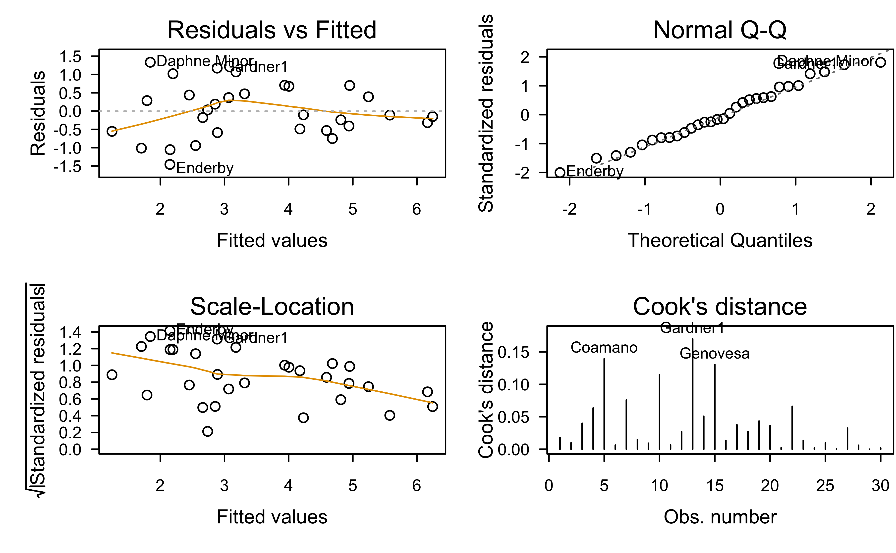

An interesting characteristic of the Poisson is that the mean and variance are equal to each other
The Poisson distribution
Show R code
# Install required package(s)pkgs <-c("faraway", "investr", "mgcv", "performance", "pscl")lib <-installed.packages()[, "Package"]install.packages(setdiff(pkgs, lib))# Y ~ Poisson(lambda = 0.5)set.seed(2004) # for reproducibilitypar(mfrow =c(2, 2))for (lambda inc(0.5, 2, 5, 15)) { y <-dpois(0:35, lambda = lambda)barplot(y, xlab ="y", ylab ="P(Y = y)", names =0:35, main =paste("E(Y) =", lambda), col ="dodgerblue2", border ="dodgerblue2", las =1)}
The Poisson distribution
Show R code
y <-rpois(10000, lambda =200)hist(y, br =50)
The Poisson distribution
If the count is some number out of some possible total, then the response would be more appropriately modeled as a binomial r.v.
However, for small \(p\) and large \(n\), the Poisson distribution provides a reasonable approximation to the binomial; For example, in modeling the incidence of rare forms of cancer, the number of people affected is a small proportion of the population in a given geographical area
Show R code
c("Binomial"=pbinom(5, size =8, p =0.7),"Poisson"=ppois(5, lambda =8*0.7))
Binomial Poisson
0.4482262 0.5118609
Show R code
c("Binomial"=pbinom(5, size =100, p =0.05),"Poisson"=ppois(5, lambda =100*0.05))
Binomial Poisson
0.6159991 0.6159607
Galápagos islands data
There are 30 Galapagos islands and 7 variables in the data set. The relationship between the number of plant species (\(Y\)) and several geographic variables is of interest. The original data set contained several missing values which have been filled for convenience. See the faraway::galamiss data set for the original version.
Galápagos islands data
Galápagos islands data
We’ll remove Endemics since we won’t be using it!
Show R code
# Load the Galapagos Islands datadata(gala, package ="faraway")gala$Endemics <-NULL# Print structure of data framestr(gala)
'data.frame': 30 obs. of 6 variables:
$ Species : num 58 31 3 25 2 18 24 10 8 2 ...
$ Area : num 25.09 1.24 0.21 0.1 0.05 ...
$ Elevation: num 346 109 114 46 77 119 93 168 71 112 ...
$ Nearest : num 0.6 0.6 2.8 1.9 1.9 8 6 34.1 0.4 2.6 ...
$ Scruz : num 0.6 26.3 58.7 47.4 1.9 ...
$ Adjacent : num 1.84 572.33 0.78 0.18 903.82 ...
Galápagos islands data
Summary of data frame
Show R code
summary(gala)
Species Area Elevation Nearest
Min. : 2.00 Min. : 0.010 Min. : 25.00 Min. : 0.20
1st Qu.: 13.00 1st Qu.: 0.258 1st Qu.: 97.75 1st Qu.: 0.80
Median : 42.00 Median : 2.590 Median : 192.00 Median : 3.05
Mean : 85.23 Mean : 261.709 Mean : 368.03 Mean :10.06
3rd Qu.: 96.00 3rd Qu.: 59.237 3rd Qu.: 435.25 3rd Qu.:10.03
Max. :444.00 Max. :4669.320 Max. :1707.00 Max. :47.40
Scruz Adjacent
Min. : 0.00 Min. : 0.03
1st Qu.: 11.03 1st Qu.: 0.52
Median : 46.65 Median : 2.59
Mean : 56.98 Mean : 261.10
3rd Qu.: 81.08 3rd Qu.: 59.24
Max. :290.20 Max. :4669.32
Galápagos islands data
Show R code
pairs(gala)
Galápagos islands data
Show R code
pairs(~log(Species) +log(Area) +log(Elevation) +log(Nearest) +log(Scruz +0.1) +log(Adjacent), data = gala)
Call:
lm(formula = log(Species) ~ log(Area) + log(Elevation) + log(Nearest) +
I(log(Scruz + 0.1)) + log(Adjacent), data = gala)
Residuals:
Min 1Q Median 3Q Max
-1.4563 -0.5192 -0.1059 0.4632 1.3351
Coefficients:
Estimate Std. Error t value Pr(>|t|)
(Intercept) 5.10569 1.64880 3.097 0.00493 **
log(Area) 0.50350 0.09942 5.064 3.53e-05 ***
log(Elevation) -0.37384 0.32242 -1.159 0.25767
log(Nearest) -0.06564 0.11475 -0.572 0.57262
I(log(Scruz + 0.1)) -0.08255 0.09517 -0.867 0.39433
log(Adjacent) -0.02488 0.04596 -0.541 0.59327
---
Signif. codes: 0 '***' 0.001 '**' 0.01 '*' 0.05 '.' 0.1 ' ' 1
Residual standard error: 0.7877 on 24 degrees of freedom
Multiple R-squared: 0.7899, Adjusted R-squared: 0.7461
F-statistic: 18.05 on 5 and 24 DF, p-value: 1.941e-07
Galápagos islands data
Residual analysis
Show R code
par(mfrow =c(2, 2))plot(gala.ols, which =1:4)

Poisson regression
Need a way to link the mean response \(\mathrm{E}\left(Y\right) = \mu \in \left(0, \infty\right)\) to the linear predictor \(\eta = \boldsymbol{x}^\top\boldsymbol{p}\)
In Poisson we regression, we default to \[
\log\left(\mu\right) = \boldsymbol{x}^\top\boldsymbol{p}
\]
Maximum likelihood estimation provides a convenient estimate of \(\boldsymbol{\beta}\)
Galápagos islands data
Try a Poisson regression
Show R code
summary(gala.poi <-glm(Species ~ ., data = gala, family = poisson))
Call:
glm(formula = Species ~ ., family = poisson, data = gala)
Deviance Residuals:
Min 1Q Median 3Q Max
-8.2752 -4.4966 -0.9443 1.9168 10.1849
Coefficients:
Estimate Std. Error z value Pr(>|z|)
(Intercept) 3.155e+00 5.175e-02 60.963 < 2e-16 ***
Area -5.799e-04 2.627e-05 -22.074 < 2e-16 ***
Elevation 3.541e-03 8.741e-05 40.507 < 2e-16 ***
Nearest 8.826e-03 1.821e-03 4.846 1.26e-06 ***
Scruz -5.709e-03 6.256e-04 -9.126 < 2e-16 ***
Adjacent -6.630e-04 2.933e-05 -22.608 < 2e-16 ***
---
Signif. codes: 0 '***' 0.001 '**' 0.01 '*' 0.05 '.' 0.1 ' ' 1
(Dispersion parameter for poisson family taken to be 1)
Null deviance: 3510.73 on 29 degrees of freedom
Residual deviance: 716.85 on 24 degrees of freedom
AIC: 889.68
Number of Fisher Scoring iterations: 5
# Overdispersion test
dispersion ratio = 31.749
Pearson's Chi-Squared = 761.979
p-value = < 0.001
Overdispersion detected.
Galápagos islands data
Similar to before, can use quasipoisson() family to correct fo overdispersion:
Show R code
gala.quasipoi <-glm(Species ~ ., family =quasipoisson(link ="log"), data = gala)summary(gala.quasipoi)
Call:
glm(formula = Species ~ ., family = quasipoisson(link = "log"),
data = gala)
Deviance Residuals:
Min 1Q Median 3Q Max
-8.2752 -4.4966 -0.9443 1.9168 10.1849
Coefficients:
Estimate Std. Error t value Pr(>|t|)
(Intercept) 3.1548079 0.2915901 10.819 1.03e-10 ***
Area -0.0005799 0.0001480 -3.918 0.000649 ***
Elevation 0.0035406 0.0004925 7.189 1.98e-07 ***
Nearest 0.0088256 0.0102622 0.860 0.398292
Scruz -0.0057094 0.0035251 -1.620 0.118380
Adjacent -0.0006630 0.0001653 -4.012 0.000511 ***
---
Signif. codes: 0 '***' 0.001 '**' 0.01 '*' 0.05 '.' 0.1 ' ' 1
(Dispersion parameter for quasipoisson family taken to be 31.74921)
Null deviance: 3510.73 on 29 degrees of freedom
Residual deviance: 716.85 on 24 degrees of freedom
AIC: NA
Number of Fisher Scoring iterations: 5
Rates and offsets
The number of observed events may depend on a size variable that determines the number of opportunities for the events to occur
For example, the number of burglaries reported in different cities
In other cases, the size variable may be time
For example, the number of customers served by a sales worker (must take account of the differing amounts of time worked)
Rates and offsets
An experiment was conducted to determine the effect of gamma radiation on the numbers of chromosomal abnormalities (ca) observed. The number (cells), in hundreds of cells exposed in each run, differs. The dose amount (doseamt) and the rate (doserate) at which the dose is applied are the predictors of interest. The hypothesized model is as follows:
dicentric <- faraway::dicentricdicentric$dosef <-factor(dicentric$doseamt)fit <-glm(ca ~offset(log(cells)) +log(doserate)*dosef, family = poisson, data = dicentric)summary(fit)
Call:
glm(formula = ca ~ offset(log(cells)) + log(doserate) * dosef,
family = poisson, data = dicentric)
Deviance Residuals:
Min 1Q Median 3Q Max
-1.49101 -0.62473 -0.05078 0.76786 1.59115
Coefficients:
Estimate Std. Error z value Pr(>|z|)
(Intercept) -2.74671 0.03426 -80.165 < 2e-16 ***
log(doserate) 0.07178 0.03518 2.041 0.041299 *
dosef2.5 1.62542 0.04946 32.863 < 2e-16 ***
dosef5 2.76109 0.04349 63.491 < 2e-16 ***
log(doserate):dosef2.5 0.16122 0.04830 3.338 0.000844 ***
log(doserate):dosef5 0.19350 0.04243 4.561 5.1e-06 ***
---
Signif. codes: 0 '***' 0.001 '**' 0.01 '*' 0.05 '.' 0.1 ' ' 1
(Dispersion parameter for poisson family taken to be 1)
Null deviance: 4753.00 on 26 degrees of freedom
Residual deviance: 21.75 on 21 degrees of freedom
AIC: 209.16
Number of Fisher Scoring iterations: 4
zero-inflated outcomes
The state wildlife biologists want to model how many fish are being caught by fishermen at a state park. Visitors are asked how long they stayed, how many people were in the group, were there children in the group, and how many fish were caught. Some visitors do not fish, but there is no data on whether a person fished or not. Some visitors who did fish did not catch any fish so there are excess zeros in the data because of the people that did not fish.
Zero-inflated outcomes
Our sample consists of We have data on N=250 groups that went to a park. Each group was questioned about how many fish they caught (count), how many children were in the group (child), how many people were in the group (persons), and whether or not they brought a camper to the park (camper).
The data can be read in as follows:
fish <-read.csv("https://stats.idre.ucla.edu/stat/data/fish.csv")
Zero-inflated outcomes
# Retain only variables of interest and print summaryfish <- fish[, c("count", "child", "persons", "camper")]summary(fish)
count child persons camper
Min. : 0.000 Min. :0.000 Min. :1.000 Min. :0.000
1st Qu.: 0.000 1st Qu.:0.000 1st Qu.:2.000 1st Qu.:0.000
Median : 0.000 Median :0.000 Median :2.000 Median :1.000
Mean : 3.296 Mean :0.684 Mean :2.528 Mean :0.588
3rd Qu.: 2.000 3rd Qu.:1.000 3rd Qu.:4.000 3rd Qu.:1.000
Max. :149.000 Max. :3.000 Max. :4.000 Max. :1.000
Zero-inflated outcomes
Show R code
pairs(log(count +0.1) ~ ., data = fish)
Zero-inflated outcomes
Too many zeros?
Show R code
barplot(table(fish$count))
Zero-inflated outcomes
fish.poi <-glm(count ~ ., data = fish, family = poisson)summary(fish.poi)
Call:
glm(formula = count ~ ., family = poisson, data = fish)
Deviance Residuals:
Min 1Q Median 3Q Max
-6.8096 -1.4431 -0.9060 -0.0406 16.1417
Coefficients:
Estimate Std. Error z value Pr(>|z|)
(Intercept) -1.98183 0.15226 -13.02 <2e-16 ***
child -1.68996 0.08099 -20.87 <2e-16 ***
persons 1.09126 0.03926 27.80 <2e-16 ***
camper 0.93094 0.08909 10.45 <2e-16 ***
---
Signif. codes: 0 '***' 0.001 '**' 0.01 '*' 0.05 '.' 0.1 ' ' 1
(Dispersion parameter for poisson family taken to be 1)
Null deviance: 2958.4 on 249 degrees of freedom
Residual deviance: 1337.1 on 246 degrees of freedom
AIC: 1682.1
Number of Fisher Scoring iterations: 6
Model is underfitting zeros (probable zero-inflation).
The hurdle model
In addition to predicting the number of fish caught, there is interest in predicting the existence of excess zeros (i.e., the zeroes that were not simply a result of bad luck or lack of fishing skill). In particular, we’d like to estimate the effect of party size on catching zero fish.
We can accomplish this in several ways, but popular choices include:
The zero-inflated Poisson (or negative binomial) model
The hurdle model
The hurdle model
In this example, we’ll use a simple hurdle model, which essentially fits two separate models:
\(\mathrm{P}\left(Y = 0\right)\) via a logistic regression
\(\mathrm{P}\left(Y = j\right)\), \(j = 1, 2, \dots\) via a truncated Poisson regression
The hurdle model
You can fit hurdle models using the hurdle() function from package pscl: